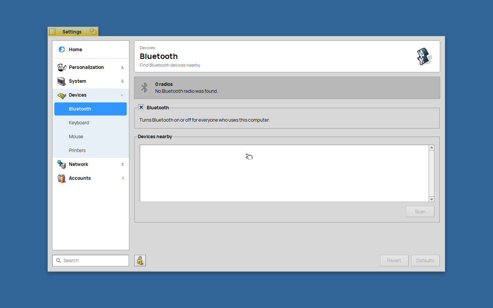

R5's libr5bt.so is the Bluetooth panel and the controller behind it. The
Bluetooth page in Settings shows the panel as its page. A program can show it too, or use the
controller alone. It sits on top of Haiku's libbluetooth and
bluetooth_server, which stay as they are for Haiku programs. The code is
R5's own and MIT.
Declared in
<R5Bluetooth.h>
Library
libr5bt.so (link be and libr5bt.so)
Source
distro/bluetooth/lib
Contract
docs/LIBR5.md
Nothing waits on a radio. All work with bluetooth_server and
libbluetooth happens on the controller's own thread. A window only sends messages and receives the
state. bluetooth_server is a system service from boot; if it is not running, the controller asks
launch_daemon once to start it.
BluetoothView
class
Declared in
<R5Bluetooth.h>
Derived from
BGroupView
A summary card (a BAppearanceKit::BCard) with the Bluetooth glyph, the
number of radios and the radio in use; a box whose title is the Bluetooth switch, with a radio menu
when there is more than one radio; and the devices nearby, with Scan. It starts its own
BluetoothController when it is attached to a window and stops it when it
is detached.

The Bluetooth page in Settings, R5 in QEMU without a Bluetooth radio, 16 Nov 2026Screenshot
BluetoothView(bool settingsPage = false);
false: with window insets, for a program's window.
true: without insets, for a Settings page.
void SetRadioSwitchAllowed(bool allowed);
The switch turns Bluetooth on or off for the whole computer. A program keeps it disabled while
the administrator lock (r5_admin_change_allowed()) is closed. Scanning
stays usable for everyone. On by default.
#include <AdminLock.h>
#include <R5Bluetooth.h>
BluetoothView* bluetooth = new BluetoothView(false);
bluetooth->SetRadioSwitchAllowed(r5_admin_change_allowed());
BLayoutBuilder::Group<>(this, B_VERTICAL, 0)
.Add(bluetooth);
BluetoothController
class
Declared in
<R5Bluetooth.h>
Derived from
BLooper
Reads the radios and the switch from bluetooth_server every 3 seconds, scans when asked, and
reports.
BluetoothController(const BMessenger& target);
target receives the state.
status_t Start();
Runs the looper and sends the first state. Stop it by sending it B_QUIT_REQUESTED.
Do not Lock() it from a window: libbluetooth's own calls have no
timeout.
Send these to the controller:
kMsgBluetoothScan
Look for devices nearby, about 13 seconds.
kMsgBluetoothCancelScan
Stop looking.
kMsgBluetoothSetRadio
"on" (bool). System-wide: check the administrator lock first.
kMsgBluetoothSelectRadio
"hci_id" (int32): use another radio.
kMsgBluetoothRefresh
Read and send the state again.
kMsgBluetoothPair
"bdaddr" (bdaddr_t),
"name" and "class" (uint32) of a device
from the scan: stop the scan and pair with it. The panel's Pair button sends it. The result
shows in the device's own events; there is no reply message yet.
The target receives these:
kMsgBluetoothStateChanged
A BluetoothState; read it with state.Unarchive(*message).
kMsgBluetoothRadioResult
"on" and "status" (int32) after kMsgBluetoothSetRadio.
BluetoothState
struct
service is BLUETOOTH_SERVICE_STARTING,
RUNNING, FAILED (it could not be started) or
STOPPED (it was running and is gone). radioEnabled
is the switch. radios lists one BluetoothRadioInfo
per radio (id, name,
address), and radio is the one in use, or -1.
scanning and scanned say whether a scan runs or
has finished, and devices lists what the last scan found.
struct BluetoothDeviceInfo;
address, name (empty when the device
sent none), deviceClass (the 24-bit class of device) and
rssi (dBm, or 127 when not reported). Kind()
turns the class into "Phone", "Headphones", "Mouse" and the like. DisplayName()
is the name, or the kind, or the address. SignalLevel() gives 0 to 4 bars
for r5_level_glyph_draw(R5_LEVEL_SIGNAL), 10 dB per bar from -90 dBm, or
-1.
The Bluetooth switch
Bluetooth has no power-off command for the radio. When the switch is off, bluetooth_server writes
"no inquiry scan, no page scan" to every radio, so nothing can find this computer or connect to it,
and it refuses scans and connections, outgoing and incoming. It keeps the choice in
B_SYSTEM_SETTINGS_DIRECTORY/bluetooth/r5_radio, so it holds after a
restart. bluetooth_server is a system service that runs from boot; that folder is its own. Turning it on again allows scans and connections, and lets paired devices
connect again by themselves ("page scan" on), so a game controller comes back after sleep. It does
not make the computer visible to a scan of strangers.
RemoteDevice
Bluetooth Kit, one addition
int8 GetRSSI();
The signal strength from the inquiry that found the device, in dBm, or
HCI_RSSI_INVALID (127). R5 ships it in libbluetooth.so; the other calls
stay as they are.
Game controllers, mice and keyboards
A paired Bluetooth HID device (Classic Bluetooth) behaves like the same device on USB, so a
program needs nothing new. A game controller appears under
/dev/joystick/bluetooth/ and is found by
BJoystick::CountDevices() and the Joysticks panel, with the same
protocol as a USB controller; buttons keep their raw numbers. A mouse and a keyboard go to
input_server through its own add-ons. The driver behind it, bluetooth_hid, reuses Haiku's HID parser
from usb_hid; bluetooth_server holds the radio connection and passes the reports on.
Pairing asks for nothing with a controller or a mouse (Just Works). A keyboard shows a window with
a number to type on it. A pairing that the other device starts by itself is refused: pair from the
panel.
Not yet. Bluetooth Low Energy devices (many modern mice) come with
a later step. Rumble, lights, touchpad and motion of game controllers are not supported.
Headphones and speakers
Media Kit
A Bluetooth headset is an ordinary audio output of the Media Kit, so a program needs nothing new:
it plays to the system mixer as always. The media add-on
bluetooth_audio.media_addon adds one output, "Bluetooth audio"
(B_BUFFER_CONSUMER | B_PHYSICAL_OUTPUT), that takes float stereo at
44.1 kHz from the mixer. Choose it as the audio output in Media. Its one parameter, Volume, is the
headset's own volume when the headset supports AVRCP absolute volume; the buttons on the headset
move it too.
The sound goes out as SBC, the codec every A2DP headset has, encoded by R5's own MIT encoder. R5
picks the best setting the headset accepts: joint stereo, 16 blocks, 8 subbands and the highest
bitpool within A2DP's limit of 512 kb/s. The encoder works on the mixer's float samples directly. The
latency the node reports includes the delay the headset reports, so a video player keeps picture and
sound together. After 5 seconds of silence the stream pauses, so the headset can sleep; the next
sound starts it again.
Which headset is each person's own choice, in
~/config/settings/Media/bluetooth_audio. A program finds it with
find_directory(B_USER_SETTINGS_DIRECTORY); the command
bt_audio use XX:XX:XX:XX:XX:XX sets it. With no choice, a paired headset
that connects plays.
Not yet. Not tried with a real headset yet: that waits for Classic
pairing on the test laptop. Play and pause on the headset start and stop the sound, but do not yet
pause the program that plays. No choice of headset on the Bluetooth page yet, and no AAC, aptX or LE
Audio.
Where people see it
Settings, Devices, Bluetooth, the first page under Devices: the panel as a page, with its own icon
and the preferences wrench. Only the switch waits for the lock. The Bluetooth program shows the same panel in its own window, and the Bluetooth item in Deskbar opens it. It replaced Haiku's Bluetooth
preferences.
Tested. On a Ryzen 5 5625U with its built-in MediaTek radio, from
a USB stick: the radio starts, the scan lists nearby devices, the switch and the Deskbar item work,
and a connection to a game controller comes up. Pairing and controller input have not been
confirmed on hardware yet. In QEMU, which has no radio, a test feeds the driver a game controller
and a mouse and checks that BJoystick reads them.